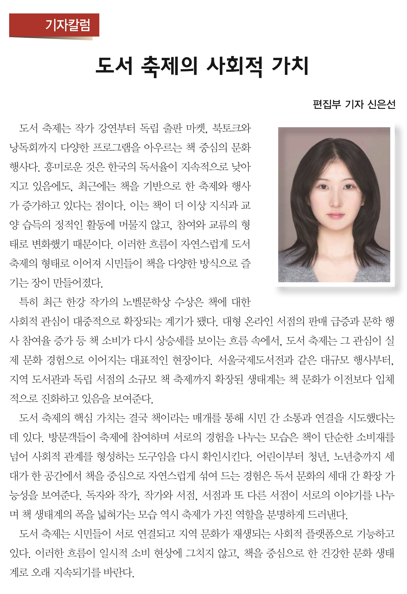
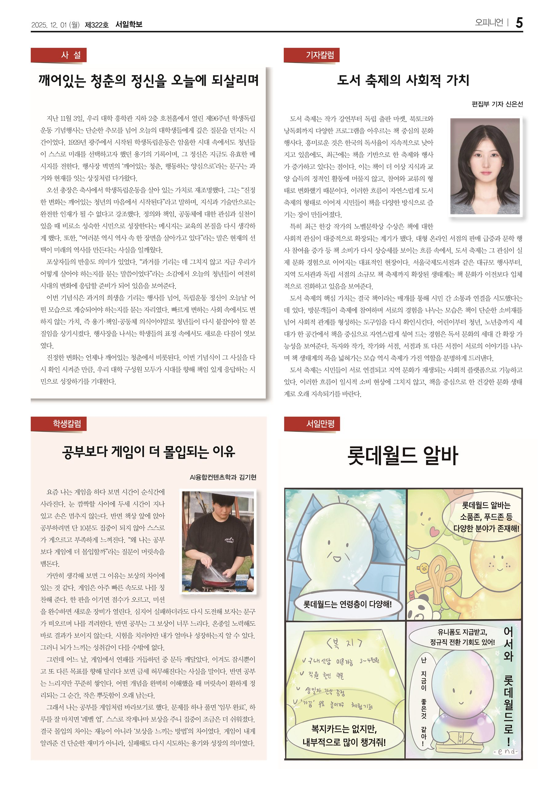

도서 축제의 사회적 가치
지면에서 옮긴 텍스트예요 · 사진과 레이아웃은 ‘지면으로 보기’에서 볼 수 있어요
도서 축제는 작가 강연부터 독립 출판 마켓, 북토크와 낭독회까지 다양한 프로그램을 아우르는 책 중심의 문화 행사다. 흥미로운 것은 한국의 독서율이 지속적으로 낮아지고 있음에도, 최근에는 책을 기반으로 한 축제와 행사가 증가하고 있다는 점이다. 이는 책이 더 이상 지식과 교양 습득의 정적인 활동에 머물지 않고, 참여와 교류의 형태로 변화했기 때문이다. 이러한 흐름이 자연스럽게 도서 축제의 형태로 이어져 시민들이 책을 다양한 방식으로 즐기는 장이 만들어졌다.
특히 최근 한강 작가의 노벨문학상 수상은 책에 대한 사회적 관심이 대중적으로 확장되는 계기가 됐다. 대형 온라인 서점의 판매 급증과 문학 행사 참여율 증가 등 책 소비가 다시 상승세를 보이는 흐름 속에서, 도서 축제는 그 관심이 실제 문화 경험으로 이어지는 대표적인 현장이다. 서울국제도서전과 같은 대규모 행사부터, 지역 도서관과 독립 서점의 소규모 책 축제까지 확장된 생태계는 책 문화가 이전보다 입체적으로 진화하고 있음을 보여준다.
도서 축제의 핵심 가치는 결국 책이라는 매개를 통해 시민 간 소통과 연결을 시도했다는 데 있다. 방문객들이 축제에 참여하며 서로의 경험을 나누는 모습은 책이 단순한 소비재를 넘어 사회적 관계를 형성하는 도구임을 다시 확인시킨다. 어린이부터 청년, 노년층까지 세대가 한 공간에서 책을 중심으로 자연스럽게 섞여 드는 경험은 독서 문화의 세대 간 확장 가능성을 보여준다. 독자와 작가, 작가와 서점, 서점과 또 다른 서점이 서로의 이야기를 나누며 책 생태계의 폭을 넓혀가는 모습 역시 축제가 가진 역할을 분명하게 드러낸다.
도서 축제는 시민들이 서로 연결되고 지역 문화가 재생되는 사회적 플랫폼으로 기능하고 있다. 이러한 흐름이 일시적 소비 현상에 그치지 않고, 책을 중심으로 한 건강한 문화 생태계로 오래 지속되기를 바란다.
지면을 누르면 크게 볼 수 있어요


Full page
칼럼이 실린 서일학보 제322호 5면 전체 지면이에요. 누르면 크게 볼 수 있어요.